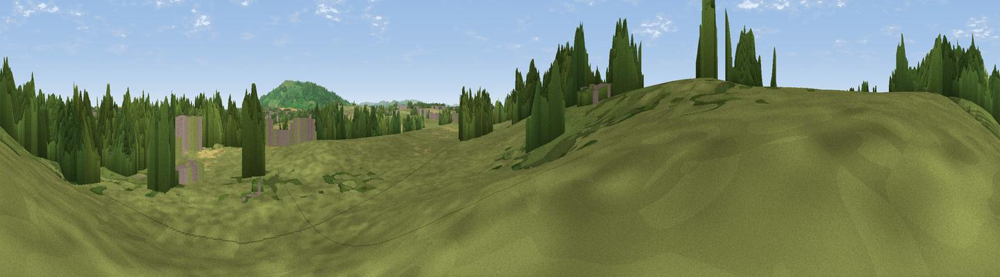

Baughton Hill
#44419 in England · top 99% of its area beats it · near BaughtonWhere it is
The exact computed spot (SO 89194 41782). Click the marker for map links.
The view, rendered

A 360° render of this exact spot computed from the terrain model, tree cover and land cover — summer colours, afternoon light, calibrated against photographs of famous viewpoints. Real trees, hedges and buildings will differ in detail.
The panorama
Grey silhouette: terrain skyline in each direction (720 bearings, Earth curvature and refraction included). Dashed green: skyline with trees (+15 m) and buildings (+8 m) as obstacles. Blue strip: how far the ground is visible on each bearing.
Where the view opens
Wedge length = distance to the farthest visible ground on that bearing (vegetation-aware). Rings at 10, 25 and 50 km.
What fills the view
66% grassland · 20% woodland · 10% cropland · 2% built-up · 1% bare ground
Angular shares of the visible panorama (visual magnitude), not map area. Landscape diversity 0.42 (0–1 Shannon).
Key numbers
More beautiful places nearby
The staircase of upgrades: each row has a higher view potential than everything closer. Driving times are estimates from straight-line distance, calibrated against real road routing — check an actual route before setting out.
| Place | Direction | Drive | Score |
|---|---|---|---|
| Viewpoint near Eckington | ESE · 2 km | ~6 min | 53.0 |
| Brockeridge Common | S · 4 km | ~9 min | 57.2 |
| Viewpoint near Bredon's Norton | ESE · 6 km | ~12 min | 81.3 |
| Bredon Hill | ESE · 7 km | ~14 min | 83.0 |
| Black Hill | W · 12 km | ~23 min | 83.1 |
| Pinnacle Hill | W · 12 km | ~23 min | 85.7 |
| Worcestershire Beacon | WNW · 13 km | ~23 min | 87.1 |
| Viewpoint near West Quantoxhead | SW · 125 km | ~150 min | 87.9 |
52.07429, -2.15908 · source: osm peak · position refined by local search. Computed location — check access rights before visiting.